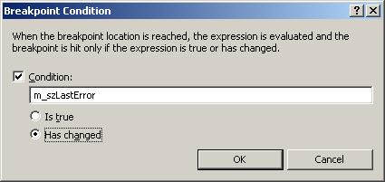
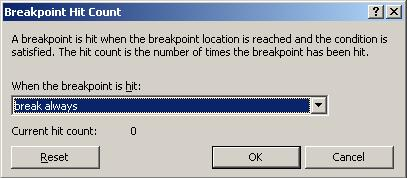
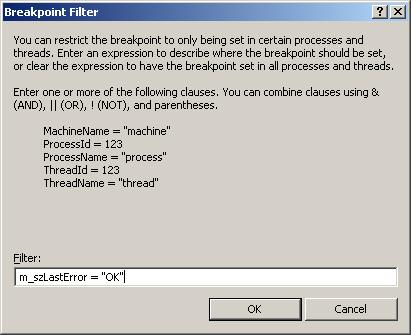
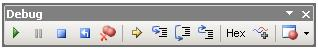
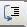
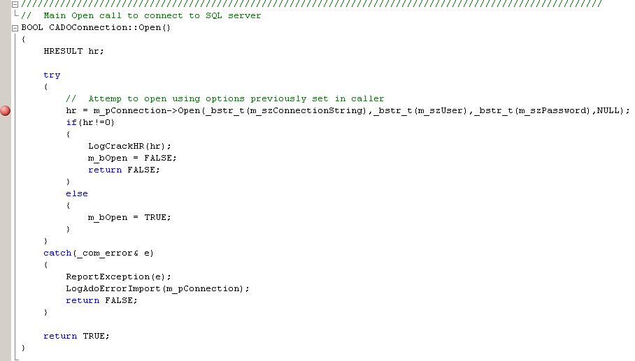
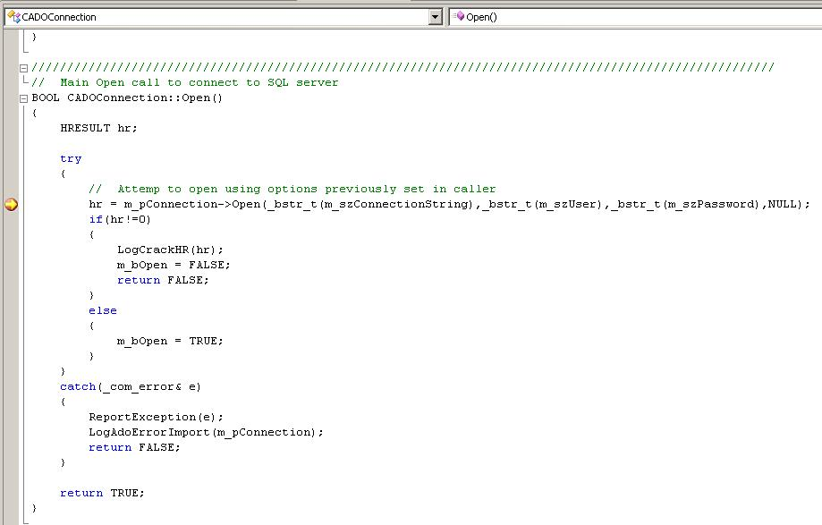
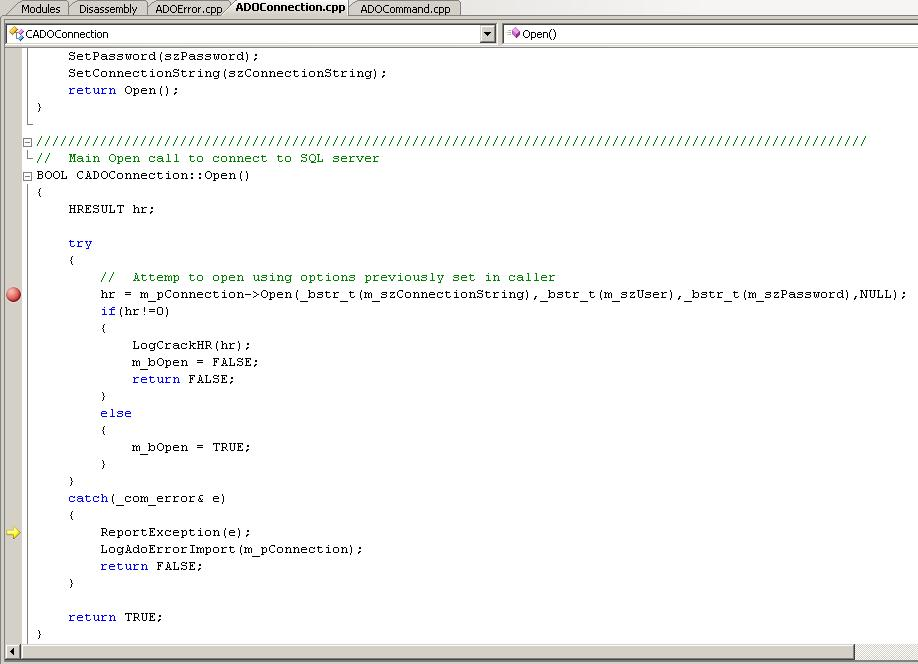
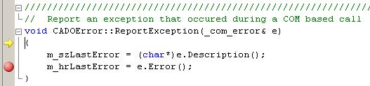
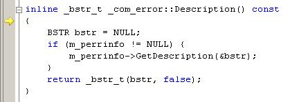

Debugging C++ Using Visual Studio 2005/2008, Part 3: Using Breakpoints Effectivelyby Patrick MancierIf you go to the Breakpoints window you will see that there is are columns displayed called 'Condition' and 'Hit Counts'. These can be very powerful mechanisms for debugging tricky code. There are a series of mechanisms here that can be used to debug the code. To see these choices, select the breakpoint box and right click to see the menu. LocationThis is an obvious one and usually is set by clicking on the far left line of the code that the programmer wants to break on. ConditionThis checks to see if a specific expression is true or has changed. It does not check specific values other than as a Boolean. Hit CountThe hit count is used to test a breakpoint for various conditions:
FilterThis is used to check a variable or a series of variables for a specific condition or a series of conditions. It can be used to check variables for string or numerical values. A combination filter of AND and OR and NOT can be used to create a custom trigger condition. This is probably the most configurable breakpoint condition of any of the breakpoint modes. Applications of the breakpoint techniquesWhat the heck are all these used for? Here is a small list of examples:
Let's say for example you're in a loop and it iterates thousands of times. You're trying to track down a tricky problem converting data, for example a string containing a strange character that is being loaded from a file. An exception is thrown and the value does not get set. You have no idea where in the file this is occurring. You do know however what the previous output looks from the last loop iteration. You can set a filter to look at the string variable you are loading with the last known value. You don't have to hit the breakpoint hundreds of times and look at the input from the file each time before you see your error. You can simply set up the filter and let it run until it breaks. After it breaks you can then step slowly through your code to see at what point the exception gets thrown. Debugging with the IDEThis the toolbar we customized earlier. The uses of some of these buttons are obvious, some of them not so obvious. F5: Start Debugging/Continue - This launches an executuable or to continue after the debugger has stopped executionCtrl+Alt+Break: Break All - This button in effect pauses or suspends the execution midstream. The debugger will stop at wherever the program counter line is pointing to, show the part in the code that it stopped at and you have access to everything as if it hit a regular breakpoint. One example of its use is for situations where there may be a runaway recursion, loops or some thread that has been improperly coded and is starving the process for execution cycles. It can show you were the execution of the program is tied up. Shift+F5: Stop Debugging - This button stops the process wherever it is and detaches from the process and exits the debugger. This button is not guaranteed to produce stable results however, depending on what the application is doing could lead to various issues, such as having a thread shutdown properly or an I/O callback to be executed. These type of operations may cause Visual Studio to hang if an attempt is made to stop debugging. Ctrl+Shift+F5: Restart - This button stops the current execution, detaches from the process, exits the debugger and then attempts to restart. Using this button can have similar issues as using the 'Stop Debugging' feature. F11: Step Into - This button is designed to allow the programmer to enter a function or a class allocation without having to set a breakpoint in the code. This is very useful for situations where you have a top level function that calls several other functions and you want to track the program flow going into that particular desired function. What will happen is when you enter a function, the debugger either jumps to another part of the code on the page if it exists in the same module, or loads the pertinent module for you and takes you to the beginning of the entered function. During this time you can continue to step line by line and watch where the program cursor goes to see what is happening in the code. You can of course set up watch variables along the way to monitor the function you stepped into. F10: Step Over - Step over is an excellent button to use. The reason is there are times where you may not necessarily want to step into every single function or every single initialization. You may want to execute the entire line and 'hop' over it. For example, if you're in a loop and you want to skip several lines, clicking on this button repeatedly will allow you to do it.  Shift+F11: Step Out - Step out is another very useful button. This is
a great button to use for situations where you are trying to step into a
function that contains various parameters that require instantiation or it
steps into another function before actually entering the function you would
like to see. It avoids having to step completely through the unwanted
function. It's akin to knocking on a door looking inside and seeing that things are pretty crazy, you really don't want to go in so you step back out. An example of this could be where you are passing a CString as a parameter into a function and as you step in you don't really care to watch all the allocation code execute, so hitting this button and then hitting step in again will skip the allocation of the CString and continue entering the function you want to step into. Shift+F11: Step Out - Step out is another very useful button. This is
a great button to use for situations where you are trying to step into a
function that contains various parameters that require instantiation or it
steps into another function before actually entering the function you would
like to see. It avoids having to step completely through the unwanted
function. It's akin to knocking on a door looking inside and seeing that things are pretty crazy, you really don't want to go in so you step back out. An example of this could be where you are passing a CString as a parameter into a function and as you step in you don't really care to watch all the allocation code execute, so hitting this button and then hitting step in again will skip the allocation of the CString and continue entering the function you want to step into.So far we have discussed several parts of the IDE, how to set them up and how to get to them. We have not done a lot to describe how to actually use these tools. Below is a snapshot of the code we would like to debug. We want to step through this code, examine class members, return codes and step into the various other functions that exists in the code. How do we accomplish this? Well we fire up our code.  Before we begin, we can set up some watch variables. To do this, first go to the Debug->Windows->Watch menu select any Watch window 1 - 5. The watch window will appear to float in the IDE, you may want to dock it somewhere, preferably somewhere below the code window. When it is displayed below, you can take any variable you see in the code and select it and drag it into the watch window. Alternatively you can just type it in manually as a new entry into the watch window. Either way, you are now tracking this variable. You are not limited to just variables, it could be an interface or an object. During debugging you can also keep the Locals or the Autos pane up. This will detail all the current local variables that are in your functions. If you are in a code that is part of a C++ class, it will also provide a 'this' pointer that you can break out and examine the variables during execution. As you are stepping through and executing the code, if you watch what happens in any of these debugging windows you have set up, you will see that as variables change, they will be colored from black to red. This is true of when you have a memory window displayed as well. Any bytes that are changed in the memory window will be turned from black to red. We begin the execution of our code using the 'Start Debugging' button and when it starts, it at some point hits the breakpoint we set in the code. Once the breakpoint is hit, there is a yellow arrow called the instruction pointer that is overlaying the breakpoint. This instruction pointer always points to next instruction line that the debugger is going to execute. Now that we are here, let's say we do not care to 'step into' the first call to m_pConnection->Open(). We don't care what happens in there at all. Clicking on the 'Step Over' functions results in calling this function. Since we failed to define some of our parameters properly (on purpose in this case) an exception is thrown (more on that soon). The exception is 'caught' and results in the following snapshot: You can see that the yellow instruction arrow has passed where the breakpoint is and is now pointing to the line that has the call to ReportException() on it. Now we didn't care about the other function, but we do care to see what happens in this function. We go ahead and click on the 'Step Into' function. Now we are in the actual ReportException() function. We see that the instruction pointer is right at the beginning of the function. Continuing to click on 'Step Into' and get to the line were it calls the Description() function on our exception class. Well, this is nice we were able to do this, but we don't really care to be in this function. We ended up here because we used the 'Step Into' command in the ReportException() function. We really should have used the 'Step Over command. Well, instead of repeatedly clicking (or hitting F5) on step over, let's just quickly leave the function by clicking on 'Step Out'. This will then take us back to the ReportException() function. There is still a lot to talk about when it comes to debugging with Visual Studio. We have just gone over some of the basics of debugging in the IDE but from the example you can tell there is more to it than just knowing the IDE. There are various other aspects to debugging that are necessary to know. For example try/catch exception handling and setting up program debug breaks. Prev: Part 2: Setting up the DebuggerNext: Part 4: Setting up Code for the Debugger Related articles Debugging with Visual Studio Part 1: Debugging Concepts Debugging with Visual Studio Part 2: Setting up the Debugger Debugging with Visual Studio Part 4: Setting up Code for the Debugger Debugging with Visual Studio Part 5: Using Trace and Log Messages Debugging with Visual Studio Part 6: Remote Debugging Main debugging page GDB tutorial bug prevention, debugging strategies, tips, and gotchas hunting segmentation faults and pointer errors. Valgrind Skip Stepping Into Functions with Visual Studio's NoStepInto Option. |